|
- Richter -
Final Stage "Bloodlines"
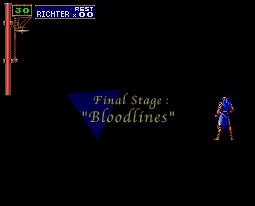
เริ่มต้นจะเล่นเป็น Richter ซึ่งเข้ามาปราบ Dracula
Boss : Dracula
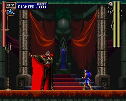
HP : 600
Boss : Dracula
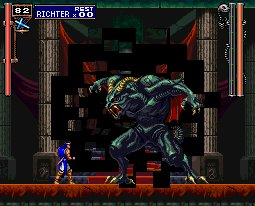
HP : 1,200
หลังจากที่ Richter ปราบ Dracula ได้
เขาก็จะหายตัวไป ในปี ค.ศ.1792
และหลังจากนั้นอีก 5 ปีต่อมา
จะเริ่มเล่นในบทบาทของ Alucard
โดยค่าพลังเริ่มต้นต่างๆ ของ Alucard จะขึ้นอยู่กับ Richter
หาก Richter ปราบ Dracula ได้โดยใช้เวลาน้อย และเสีย HP น้อย
จะทำให้ค่าพลังเริ่มต้นของ Alucard ออกมาดี
หาก Richter ปราบ Dracula ได้โดยไม่ใช้ Heart เลย
หรือ Richter ต้องให้ Maria มาช่วยปราบ Dracula
ก็จะส่งผลให้ค่าพลังเริ่มต้นของ Alucard เปลี่ยนไป
- Alucard -
Entrance
เมื่อเข้ามาในปราสาท เดินไปทางขวาเรื่อยๆ จะเจอ Death
ซึ่ง Death จะขโมย Item ของ Alucard ไปทั้งหมด (ซึ่งสามารถเก็บคืนได้ภายหลัง)
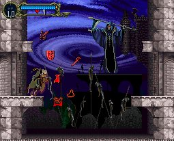
(* Note : มีวิธีทำให้ไม่โดน Death ขโมย Item ได้ด้วย)
เดินต่อไปจะเจอ Relic : Cube
of Soe
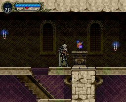
Cube of Soe - ทำให้เมื่อทำลายเชิงเทียน จะมีโอกาสได้ Item
เดินกลับไปห้องที่เจอ Death จะพบกับ
Option Boss : Gaibon and Slogra
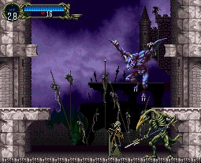
Level : 6
HP : 200 (x2)
Exp : 200 (x2)
ด้านบนของห้องที่เจอ Death
หากกระโดดลงไปด้านซ้าย (ต้องกระโดดดีๆ)
จะสามารถลงไปยังห้องลับด้านซ้ายได้
จากนั้นจะเข้าสู่โซน Alchemy Laboratory
Alchemy Laboratory
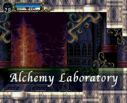
เดินต่อไปจะมีทางลับด้านล่าง (WallSecret02)
และด้านซ้ายที่กำแพง สามารถทำลายเข้าไปได้
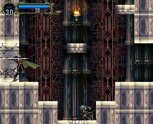
ภายในโซนนี้จะเจอ Gaibon และ Slogra อีกครั้ง
แต่คราวนี้เป็น Boss
Boss : Gaibon and Slogra
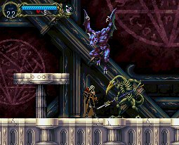
Level : 6
HP : 200 (x2)
Exp : 200 (x2)
วิธีปราบ
ให้จัดการตัวที่อยู่บนพื้นก่อน
และสามารถใช้โล่ห์ป้องกันลูกไฟได้
ใช้ขวานขว้างเมื่อศัตรูอยู่กลางอากาศ
เดินต่อไปจะเข้าสู่โซน Marble Gallery
Marble Gallery
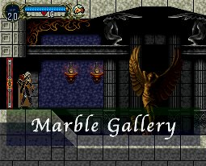
เมื่อเดินไปถึงนาฬิกายักษ์ จะเจอกับ Maria
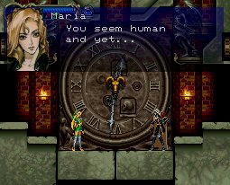
เธอเข้ามาสำรวจปราสาท และถามเกี่ยวกับ Alucard
แต่ Alucard บอกเพียงแค่ชื่อ Alucard เท่านั้น
แล้วเธอก็จากไป
ลงไปด้านล่างซ้ายของนาฬิกา จะมี Relic
: Spirit Orb ให้เก็บ
Spirit Orb - ทำให้เห็นความเสียหายที่เกิดกับศัตรู
จากนั้นกลับไปที่นาฬิกายักษ์ และเดินต่อไปทางขวา จะเจอโซนใหม่
Outer Wall
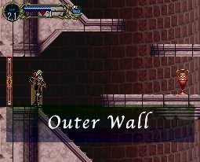
เมื่อถึงโซน Outer Wall เดินลงไปด้านล่าง
ด้านซ้ายมือจะเจอกับ Armor Lord
ให้ใช้ท่า "Hellfire" วาร์ปผ่านมันไป เข้าห้องด้านซ้ายมือ
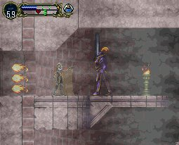
ภายในให้ทำลายกำแพงด้านซ้ายมือ จะเจอกับ Pot
Roast
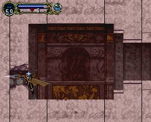
แต่ความลับยังไม่หมดเท่านั้น
ให้ยืนรออยู่ในซอกกำแพงที่เพิ่งทำลายไปประมาณ 30 วินาที
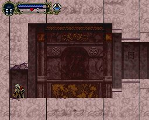
จะสามารถลงไปยังห้องด้านล่างได้ (WallSecret03)
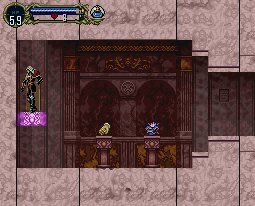
ซึ่งมี Item ดีๆ ให้เก็บคือ
Jewel Knuckles และ Mirror
Cuirass
กลับไปยังด้านบน จะเจอห้อง Save อยู่ด้านซ้ายมือ
เมื่อเดินออกมาด้านขวา จะเจอกับ Boss
Boss : Doppleganger10
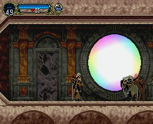
Level : 10
HP : 120
Exp : 500
เป็น Alucard ตัวปลอม
ซึ่งสามารถขว้างมีดได้ (Sub-weapon)
วิธีปราบ
ใช้ดาบ Red Rust โจมตี
จะทำให้มันติดสถานะต้องสาบ (Curse)
ทำให้มันไม่สามารถโจมตีได้ (แต่ยังคงขว้างมีดได้)
หรือจะใช้นาฬิกาหยุดเวลาก็ได้ (Stopwatch)
ส่วนวิธีโจมตี คือ ให้รอจังหวะที่มันกระโดด
ให้กระโดดสวน แล้วก็โจมตี จะทำให้มันตกลงไปบนพื้น
และรอจังหวะมันกระโดดอีก ทำสลับไปเรื่อยๆ
ระวัง บางครั้งมันอาจแปลงร่างเป็นค้าวคาวพุ่งโจมตีได้ด้วย
จากนั้นเดินไปด้านขวาจะเจอลิฟต์ แต่ยังใช้ไม่ได้
เดินขึ้นไปด้านบนจะมีสวิตช์ เมื่อสับสวิตช์แล้ว ลิฟต์จะใช้ได้
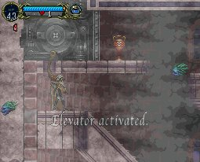
เข้าไปภายในลิฟต์ จะเก็บ Relic
: Soul of Wolf ได้
ซึ่งสามารถแปลงร่างเป็นหมาป่าได้
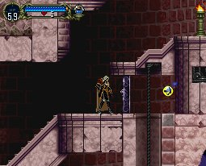
ด้านบนจะมีทางวาร์ปรูป "ปู" ไปโผล่บริเวณโซน Entrance (ทางวาร์ปรูป
"ม้า")
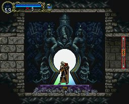
ให้วาร์ปกลับมายังโซน Outer Wall อีกครั้ง
ด้านซ้ายของลิฟต์ จะมีทางเข้าไปยังโซนใหม่
Next
to Zone : Long Library
|